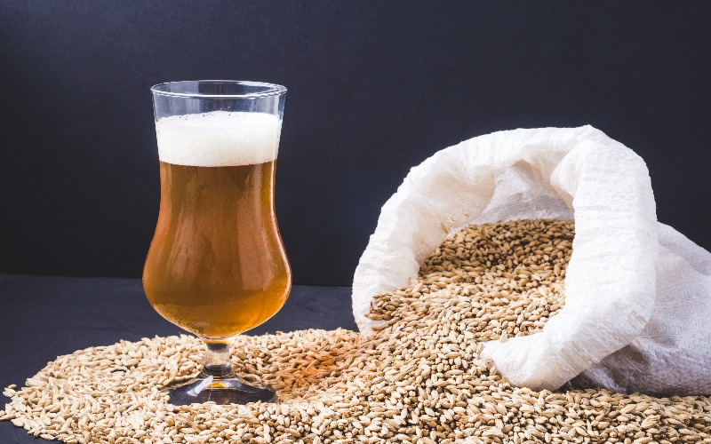

Maltarias transformam cevada na alma da cerveja. Mais comumente originário da cevada, ele precisa passar por um processo industrial que provoca a germinação que aconteceria normalmente natureza até chegar à cervejaria. Lá, esse pequeno grãozinho tem papel fundamental na produção do líquido e se torna a alma da cerveja. O processo de malteação é relativamente simples: o grão de cevada é molhado e começa a brotar. Depois, fica em um local com temperatura controlada entre 15°C e 25°C até começar a germinar. Por fim, fica em uma estufa com temperaturas de até 80°C para secar e parar de brotar. Significado de Malte: Ceada de germinação artificial, seca e reduzida a farinha para a fabricação da cerveja etc.
